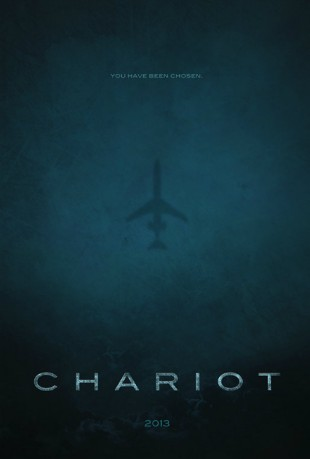

#2085 Missing
Alternativ: Chariot
 
 IMDB-Wertung: 5.1 / 10
IMDB-Wertung: 5.1 / 10  Metascore: 0
Metascore: 0 
Sieben Fremde erwachen an Bord einer Boeing 727 und haben keine Ahnung, wie sie in das Flugzeug gelangt sind - geschweige denn, wo die Reise in einer Höhe von 35.000 Fuß hingeht. Vom Cockpit abgeschnitten und mit einem akkuschwachen Smartphone als einzige Kommunikationsquelle erfahren sie von einem verheerenden Angriff auf die Vereinigten Staaten von Amerika. Ganze Städte wurden zerstört und sind wie vom Erdboden verschluckt. Panik macht sich unter ihnen breit, schließlich könnte es sein, dass sie die einzigen Überlebenden des Landes sind. Und langsam erwächst daraus auch die Angst um ihr eigenes Leben, denn die Frage bleibt: Wo wird ihre mysteriöse Flugreise enden?
Jahr: 2013
Dauer: 87 Minuten
FSK: 16
Land: USA Studio: Origin ReleasingTonspuren: DTS - ,
Untertitel: Deutsch,
Auflösung: 1080p (1920x816) Größe: 4311 MB
Genre: Drama, Thriller
Regisseur: Brad Osborne
Drehbuch: Eric Vale
Soundtrack: John Roome
Darsteller:
- Anthony Montgomery als Cole
 Brina Palencia als Emily
Brina Palencia als Emily- Michelle Sherrill als Genevieve
- Leslie Hippensteel als Belinda
- David DeLao als Ra
 Larry Jack Dotson als Collins
Larry Jack Dotson als Collins- J. Taylor als Moss
- Frederic Doss als Boyd
- LeeAnne Locken als News Anchor
- Simon Morton als Fischer
 Eric Vale als Langdon
Eric Vale als Langdon- Everette Scott Ortiz als Arabic Man
 Ian Sinclair als Aden
Ian Sinclair als Aden Joe Nemmers als Michael
Joe Nemmers als Michael
Datei: X:\2013(I-M)\Missing (2013, FSK16, 1920x816).mkv seit 01.10.2015
Festplatte: HD 2013(I-Z)-2014(A-Z)
 Es gibt insgesamt 89 Filme in der Gruppe '2013(I-M)'
Es gibt insgesamt 89 Filme in der Gruppe '2013(I-M)'